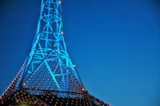
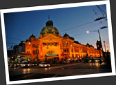
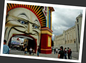

|  |
第三章 在墨爾本，我找到了軟弱 3. Melbourne & Victoria |
 |
燈光閃閃
Peter 把我從農場載到鎮中的車站．或許他覺得我很快會把錢花光，然後再回來替他打工．他對我說："I know I'm going to see you next week"，繼續和他碰到的一位朋友聊天，沒有用心留意我對他最後的道別．
我搭上巴士，穿過一片又一片的農地，來到一個叫做 Swan Hill 的地方，在這兒轉乘上火車到墨爾本．在火車上我遇到兩位澳洲人，其中一位是種植葡萄的農夫，我和他們一起聊天．澳洲人總給我十分健談的感覺，無論對方認識與否，是本地人還是外國人，只要懂說英語，彼此打個招呼，他們便有能力和你聊上好一會．我想，在香港，若果我忽然跟一個不認識的人說話，或許那個人會以為我是瘋子．不過澳洲人也不是一味友善，我也曾遇過不少蠻橫瘋狂的澳洲人，世事沒有完美，人也沒有圓人．
火車漸漸駛進墨爾本市郊，不久便看到大球場 Telstra Dome，來到市中心的長途火車站 Southern Cross station．才剛下火車，便被身邊的一切驚呆．原來自己在見草比見人多的農場待了好一會，一下子來到人來人往的火車站．往下望的不是泥土，而是潔凈整齊的石階磚．抬頭看到的不是天空，而是一盞又一盞的射燈，發放著刺眼的光芒，竟覺得渾身不自在，像是到了一個外星世界一樣．不禁低聲說了一句："文明哦！"
軟弱的我
我得到 Joyce 和她朋友 Joe 的迎接，來到她位處 Hawthorn 區的家．在這兒，我得到他們的款待，妹妹琪琪更加是個十分友善健談的女孩子．之前受人冷眼，又住破房子抵冷風，現在忽然來到一個溫暖的家，得到友善的幫忙，感到極強烈的一個反差．誇張一點說，覺得自己像到了地獄和天堂各走一轉．
然而，得到朋友的幫助，太容易獲得的溫暖，卻叫我忘記了一些重要的原則．我這次之所以放棄一切來到澳洲，就是要學習獨立，學習自己解決困難．同時亦應該多嘗試不同的體驗，多認識來自各地不同的人，從中得到寶貴難忘的經歷．但是，在這麼溫暖的一個家中，是多麼容易的渡過一天．再加上碰到澳洲一年中少有的長假期 Good Friday 和復活節，到處的住宿和交通都是十分緊張，要離開墨爾本，也不是件容易的事情．結果，我在朋友家待了兩個星期，期間對她們日常生活帶來諸多不便，多少也讓人家不高興．這段日子，我雖然可以好好休息，讓自己復原狀態．但我卻是活在別人的庇蔭之下，雖然臨走前，我有付回自己的生活費．但我覺得，這段日子是自己整個旅程中過得最軟弱，最不思進取的．每次回想，總懊惱為甚麼自己當時要靠別人，而不好好自己去闖闖......
墨爾本的成熟美
曾經不只聽過一個人說，比起悉尼，他比較喜歡墨爾本．
悉尼和墨爾本這兩個澳洲首二大城市，彷忽就像一對永遠鬥氣的兄弟．有人說悉尼像是個天橋上的模特兒，處處閃著刺眼的光芒．設計超時代的歌劇院，令人一看難忘的悉尼港大橋，還有滑浪文化的代表 Bondi beach．那麼，墨爾本擁有的，則是較為成熟出塵的美態．悉尼往往給我一種雜亂無章，人車混亂的感覺．墨爾本卻要用潔凈整齊來形容，市內的一套電車系統不但方便也十分簡潔．四方形小而整齊的市中心走著的都是很有禮貌的人，反之在悉尼，流浪漢隨處可見．沒有悉尼如此人馬疊疊，有的是完善的單車徑，讓市民可以選擇一個健康又環保的代步方法．一條寧靜的 Yarra River 貫穿整個城市，使人覺得安逸閒息．而墨爾本在文化藝術，或是體育運動上都在澳洲扮演著主導的角色．單是憑感覺，我就知道自己比較喜歡墨爾本．只是墨爾本常常天氣不佳，總是天陰陰，有時更下起雨來，算是有點美中不足．
在墨爾本的市中心遊盪，甚麼都覺得新奇．走走看看，每天都發現新的東西．乘搭市中心免費的電車四處走，看看街上的人，看看街頭表演．到號稱全澳洲最漂亮的公園 Royal Botanic Garden 找澳洲獨有的黑天鵝．到免費的藝術館 NGV 看藝術品．再到著名的球場 MCG 拍個照．又到戰爭紀念柱前看降旗儀式，旁邊有位澳洲人，他跟我說，降旗時所吹奏的音樂叫 "The Post"，是首很著名的樂章．
去意大利區 Lygon street 感受一點歐陸風情，還到越南區 Richmond 這亞洲人雜處的地區看看．尚可以到 Queen Victoria Market 看各式其色的東西，各種不同種類的食物，乾貨蔬果，各式工藝品，街頭表演......澳洲是個移民國家，來自不同文化背景的人均來這兒落地生根，一個市場，把這種百花齊放的景致寫實地表現出來．
走出墨爾本市區，還可以到其他市郊看看．到了 Brighton beach 看沙灘上百多間排成一列的小木屋，每一間均塗上不同的顏色和圖案．走到屬於 Dandenongs Ranges 的小鎮 Belgrave 去看懷舊火車 Puffing Billy．還有墨爾本的週末好去處 St. Kilda，走過眾多看似漂亮而又美味的蛋糕店，再漫步沙灘．我更加遇上了在 Tokyo Village 認識的香港女生 Jesey，我們兩人一起去看 St. Kilda 的週末市場．又走到碼頭看人釣魚，釣魚的人把很多海星捉了上來．我問他為甚麼要這樣做，他說這些海星都是外來物種，對本土的自然生態有害．因此他們捉到的話，都會把牠們扔進垃圾筒．澳洲和主要大陸自遠古以來已經分離．因此長有十分獨特的生態，而且也十分脆弱．因此當地政府十分著重生態的維護，一般澳洲人對保護本土生態都有一定認識．
復活節假期，Joe 帶 Joyce 和琪琪遊車河去，連同把我也帶上了．跳上車子，經過維省的另一大城市 Geelong，走訪了稱為 Bellarine Peninsula 一帶的一些小城鎮：Portarlington, Queenscliff, Point Londsdale, Barwon Heads 等等，感受一眾海邊小鎮懶慵慵的氣氛．在有趣的地方就停下來看看拍拍照．琪琪見我不斷拍風景照，常叫我多拍自己．怎麼說呢？或許這就是愛拍照和愛被拍照的分別......
計劃行程失預算
其實尚在農場之時我就開始計劃今後的行程，只是手頭上資料不多．之前曾經聽過阿德介紹一張叫 Great Southern Railway Pass 的火車證，$450 元，半年有效的，可以跑不少地方．雖然有點貴，但是覺得物有所值．而且，鐵道旅行一定比坐飛機來得有趣吧！於是心中一直計劃買這個火車證．到火車站一問，才發現這張火車證已經漲價至 $590！這價錢對我來說是非常昂貴！但是思前想後，還是想不出再好再簡單的旅遊方式．最後忍痛買下了這張火車證，身上的旅費頓時少了一大部份！這 $590 元，我不知要在田地跪多少天才能賺到呢！
擁有了這張火車證，我便可以在澳洲三條鐵道上任意通行．包括了由墨爾本連接阿得萊德 (Adelaide) 的 Overland，還有兩條澳洲人引以為傲的經典鐵道：貫穿澳洲南北，由 Adelaide 連接到達爾文 (Darwin) 共 2920 公里路程的 The Ghan．及貫穿澳洲東西，由悉尼連接到柏斯 (Perth) 共 4352 公里路程的 Indian Pacific．也就是說，我今後有好一段日子不用擔心交通：行走澳洲的最大難題．
想好了行程，先從墨爾本乘 Overland 到 Adelaide，再轉乘 The Ghan 到澳洲中部的愛麗絲泉 (Alice Springs)．到達 Alice Springs 後再去一睹世界著名的巨石烏奴奴 (Uluru)．對我來說，Uluru 和昆士蘭的大堡礁是澳洲之行的必到之處！這是自己最低限度要達成的目標！即使以後賺不到旅費，我也準備好把僅有的身家拿出來，甚至向家人或朋友借錢！一生人一次的大旅行，我絕對不容許自己帶著遺憾回家！